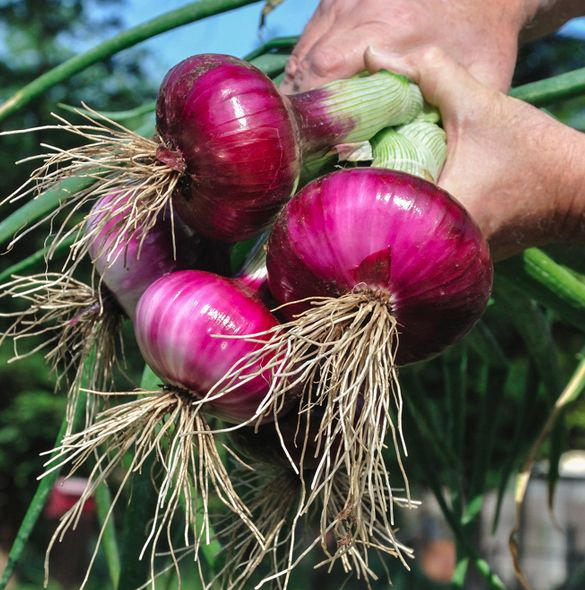
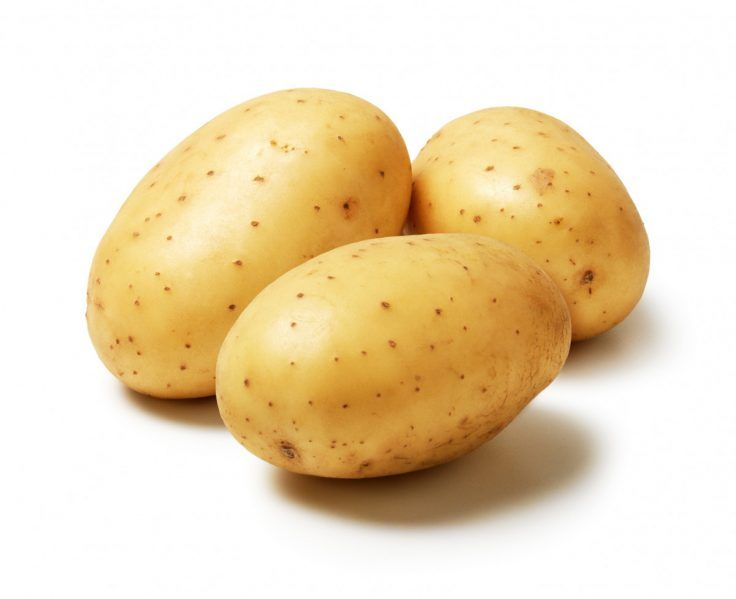
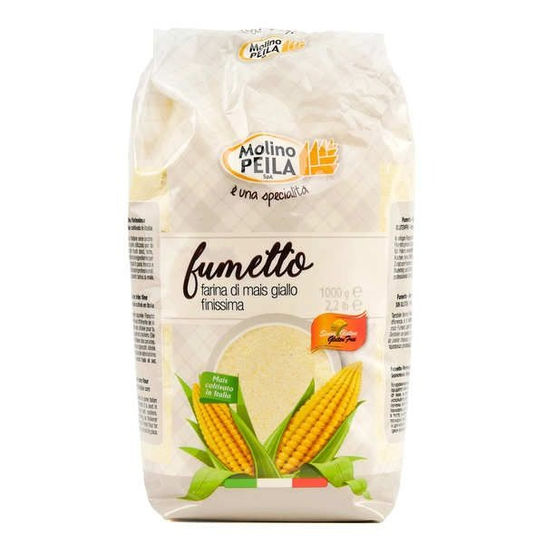

Manioc
Tubercule très utilisé pour la fabrication du gari, de la farine et du tapioca.
Explorez une sélection de produits frais issus de l'agriculture togolaise ainsi que des produits transformés de qualité.
Tubercule très utilisé pour la fabrication du gari, de la farine et du tapioca.

Une céréale essentielle pour l'alimentation humaine et animale.

Fruit tropical apprécié pour sa saveur sucrée et sa richesse en vitamines.

Légume incontournable dans la cuisine togolaise.

Tubercule riche en glucides et très polyvalent en cuisine.

Piment frais cultivé localement pour relever tous vos plats.

Jus naturel préparé à partir d'ananas frais.
Boisson rafraîchissante à base de mangues locales.

Farine de qualité destinée à l'alimentation familiale.